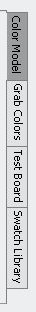

|
Add colors to palette |
|
|  |
Select/Add colors from Color Model - Double click on an ideal color on the panel or press Add button on your palette panel, then the selected will be added into your palette. Select/Add colors from Grab Colors - Press Start button to open the Zoom Window. There have two ways to select colors with Zoom Window. After the Zoom Window is open, use hotkey of Grab color to grab the color that your mouse points at on the screen. You can also use hotkey of Zooming to start/ pause zooming, when the zooming is paused, an image of captured zooming area will be dispalyed inside the Zoom Window. From there, you will select color by click on the image of captured zooming area. When you close the Zoom Window, all colors you've selected from the screen will be added into Grab Colors panel, you can double click on the color swatch on the panel or press the Add button on your palette to add selected color into your palette. Select/Add colors from Swatch Library - Select any idea color swatch and double click on it or press Add button on your palette panel to add selected color into your palette. |